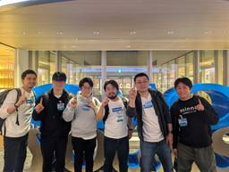
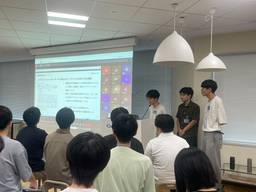

Pepabo Tech Portal
https://tech.pepabo.com/
GMOペパボのエンジニア・デザイナーによる技術情報のポータルサイト
フィード

potatotips#93をハイブリッドで開催しました！
Pepabo Tech Portal
はじめにこんにちは！GMOペパボでiOSアプリ開発をしているsattonです！今回は、10月21日に開催された potatotips #93 の様子をお届けします！🥔potatotipsについての簡単な紹介potatotipsは、若手からベテランまでの幅広いエンジニアが集まり、iOS/Androidアプリ開発のTipsを発表するモバイルのLTイベントです。これまで500名以上が登壇し、2000名以上が参加してきた歴史あるコミュニティで、発表者・聴講者の垣根を超えて、モバイル開発の知見を気軽に共有できる場となっています。そして、昨年の開催に続き、今年もペパボで開催させていただきました！今回は「より多くの人に参加してもらいたい」という思いから、オンライン配信を取り入れたハイブリッド形式に挑戦しました💪弊社モバイルエンジニアの発表AndroidエンジニアのKyuさんiOSエンジニアのJonnyさん開催までの道のり今回のpotatotips#93では、昨年の開催での反省をふまえて、準備期間に十分な時間を割くことタスクをNotionで一元管理して、担当と進捗を見える化することの2点を特に意識して準備を進めました。まずは運営メンバーでキックオフを行い、タスクを洗い出して担当を決めました。社内稟議・各種申請書の作成・提出飲食物の選定・手配イベントページ（connpass）の作成配信構成（カメラ・マイク・画面共有）の確認配信機材の手配・テスト会場レイアウトや案内用掲示物の作成タスクはいつまでに終わっていると安全かをベースに逆算し、社内申請や施設利用の調整など時間がかかりそうなものから着手しました。申請関連は、他部署でのイベント事例を参考にして、申請書のフォーマットや想定される質問事項を事前に確認しておくことで、差し戻しが起きないように気をつけました。フードの工夫平日夜の開催ということもあり、仕事帰りでも気軽に食べられて、しっかりお腹を満たせるもの を意識しました。片手で食べやすいお弁当を選ぶ発表の合間に取りやすい場所にソフトドリンクを配置するといった、「腹ごしらえしながらLTを聞ける」ような工夫をしました。また、イベント名のpotatotipsにちなんで、社内サービスからポテトチップスを厳選しご用意させていただきました！オンライン配信のチャレンジ今回の最大のチャレンジは、初のオ...
2日前

GMOペパボ サマーインターン2025 体験記（まっちゃん）
Pepabo Tech Portal
はじめにこんにちは。GMOペパボ株式会社の2025年度サマーインターンシップに参加しました、まっちゃんです。この記事では、9日間のインターンシップでの経験や学びを紹介します。配属サービス・課題内容インターンでは、4つの事業部の中から配属サービスが決定します。「カラーミーショップ」 で、今回はこのサービスの機能追加に取り組みました。具体的には、ショップオーナー様から要望のあった 受注管理画面へのメモ機能の実装 を担当しました。課題の背景：なぜメモ機能が必要だったのか？今回の機能追加は、実際にカラーミーショップを利用するショップオーナー様が抱える具体的な課題から生まれました。ショップオーナー様は、注文が入ると受注を確認し、受注伝票を用いてピッキング（商品の準備）や発送準備を進めます。しかし、注文後にお客様から電話で「ラッピングを追加してほしい」といった個別のご要望が入ることがあります。これまでの運用では、そうした急な変更内容を 受注伝票に付箋を貼ったり手書きで追記したり、コミュニケーションツールで担当者間に共有したりすることで対応されていました。重要な情報がシステム外で管理されるため、伝達ミスが起きたり、確認の手間が増えたりする課題がありました。そこで、受注情報に紐づけてメモを直接システムに保存し、それを受注伝票にも反映させることで、こうした一連の業務をサービス内で完結させ、より確実で効率的な店舗運営をサポートすることを目指しました。担当した開発内容今回の開発では、以下の要件を満たすショップ内メモを実装しました。受注画面への設置: スタッフ間の連絡事項等を記入できる専用スペースを用意ショップ全体での共有: テキストエリアに保存した内容はショップ全体に共有され、どのスタッフが見ても確認可能受注管理画面へのメモ機能の実装の開発タスクは以下の2つのフェーズに分かれています。フェーズ1: 受注管理画面において一つのメモを保存フェーズ2: 保存したメモを受注伝票に表示今回のインターンシップでは、フェーズ2の途中までを実装しました。リリースした内容は、公式のお知らせでも紹介されています。ニュースリリースはこちら1日目初日は、オリエンテーションと開発環境の準備を行いました。希望に応じてPC（MacBook Pro）のキーボード配列や画面サイズを選べる環境が整えられており、快適に開発に
4日前
「カバーとGMOペパボが語る、クリエイターの創作・表現活動を支える技術」を開催しました 1
1
Pepabo Tech Portal
はじめにGMOペパボとカバー株式会社（以下カバー社）との共催イベント「カバーとGMOペパボが語る、クリエイターの創作・表現活動を支える技術」を2025年11月5日に開催しました。本記事では、クリエイター支援を技術面から支える両社の取り組みと、当日のLT（ライトニングトーク）セッションのハイライトをレポートします。イベント概要項目 内容 テーマ 「新しいクリエイターの表現を支える技術」 日時 2025年11月5日（水）19:00 〜 対象聴講者 エンジニア、クリエイター支援技術に興味のある方々 カバー株式会社についてカバー株式会社は、世界最大級のVTuber事務所「ホロライブプロダクション」を運営し、タレントの創作・表現活動を支える多様な技術を自社で開発しています。「つくろう。世界が愛するカルチャーを。」をミッションに掲げ、ライブ配信システム、3Dモデル制作・演出、モーションキャプチャ、リアルタイム制御など、エンタメ領域ならではの高度な要件を扱う技術基盤を有しています。同社は、先端技術を取り入れながら新しい演出表現を追求することと同時に、技術的安定性とパフォーマンスの重要性を同社のテックブログで強調しています今回のイベントは、GMOペパボとカバー社の両社が日々向き合っている「クリエイターの表現活動を支援する」という共通テーマを語り合う場として企画されました。GMOペパボが持つ“クリエイター支援サービスの開発経験”とカバー社が蓄積してきた“リアルタイム表現を技術で支える知見”のそれぞれの実践を共有し合い、懇親会では活発な意見交換を行いました。登壇内容ハイライト本セッションでは、GMOペパボ・カバー社両社から各4名、計8名のエンジニアが、5分のLT形式による発表を行いました。GMOペパボの発表1. 「ブラウザストレージを活用した配信画面デザインツール Alive Studio の仕組みと設計について」事業開発部 AliveProjectチーム エンジニア 永田 配信画面デザインサービス Alive Studio byGMOペパボが、OBS Studioのブラウザーソース機能を利用したWebアプリケーションであることを前提に、ローカルストレージとストレージイベントを用いてデザインエディタと配信画面のリアクティブなドキュメント同期を実現し、既存のユーザー設定に干渉しないフレキ
4日前

YAPC::Fukuoka 2025 で 『セキュリティを 「ふつう」にやっていく 技術、体制、文化の追求』を発表しました
Pepabo Tech Portal
セキュリティ対策室所属 シニアプリンシパル・エンジニア @hiboma です。2025/11/14 - 11/15 に開催された YAPC::Fukuoka 2025 に参加・登壇し 『セキュリティを 「ふつう」にやっていく 技術、体制、文化の追求』 というタイトルで発表をしました。 1GMOペパボは、過去のセキュリティインシデントを機に、セキュリティの体制を再構築し継続的に改善を進めてきました。私 @hiboma はセキュリティ対策室が出来た当初から在籍し、現在もコミットを続けています。設立から数年も経過していることや自身のキャリアの変化も重なり、そろそろ過去の取り組みを俯瞰してアウトプットする機会が必要だなという思いもあり、このテーマで発信を行いました。1Track Bは、伊藤洋也さん（@hiboma）による「セキュリティを 「ふつう」にやっていく 技術、体制、文化の追求」です。#yapcjapanB #yapcjapan pic.twitter.com/kSt7SPPEaG— yapcjapan (@yapcjapan) November 14, 2025対策室の取り組みを俯瞰・内省するフォーマットの発信は、社外向けだと GMOペパボのセキュリティ対策の現状をありありと曝け出しフィードバックを集めるアウトプットになるでしょう (… と言いつつも詳細は隠した面もあります) 。社内向けには 「後世の歴史家」目線 (a.k.a) 後付け力 2 として一区切りつけることが機会にしたかったのもあります。発表へのリアクションや感想発表後、X や ソーシャルブックマークなどの反応を見ても、思いの外興味を持ってくださった方が多かったようで嬉しいです。カンファレンス2日目に開催された懇親会でも、発表内容への深掘り質問をいただけたり、他社様のセキュリティ体制について内情を教えてもらいディスカッションをしていただくことができました。GMOペパボ セキュリティ対策室 伊藤洋也「セキュリティを 「ふつう」にやっていく 技術、体制、文化の追求」で発表でした https://t.co/iGdJOJpLS5 #yapcjapan #yapcjapanB— hiroya ito (@hiboma) November 14, 2025正直、手厳しいフィードバックもいただけたりするかとも思っていま
13日前
入社半年で実感：SIer出身者が体験したGMOペパボの開発文化
Pepabo Tech Portal
はじめに転職の背景開発環境・技術要件の変化 AIをフル活用した開発スタイル求められる技術の幅大規模システムの運用・保守チーム・組織文化の特徴 多様なステークホルダーとの協働アウトプット文化高いオーナーシップと事業理解働き方の変化 GMOペパボの出社スタイル半年で達成できた成果 入社15営業日でクーポン上限額適用機能のリリース一括発送処理の改善作品ページにAmazonPayボタンの設置私たちが求める人物像 新しい技術や手法に対して積極的な人チームでの協働を楽しめる人アウトプットを通じて成長したい人まとめはじめにこんにちは！2025年6月1日にSIerからGMOペパボに転職した ikechi です。現在、ハンドメイドマーケット「minne」のWebエンジニアとして開発を担当しています。GMOペパボで働き始めてから、前職のSIerとは異なる開発環境や文化の違いを日々実感しています。本記事では、この半年で私が体験し、実感したSIerと事業会社の違いについて、詳しくお話ししたいと思います。転職の背景前職のSIerでは、要件定義から運用まで一通りの開発プロセスに携わり、幅広い経験を積むことができました。しかし、エンドユーザーとの距離をもっと縮め、プロダクトを通じて直接的な価値提供に携わりたいという想いが日々強くなっていきました。そんな中でGMOペパボと出会い、「みんなと仲良くすること」「ファンをつくること」「アウトプットすること」という 「わたしたちが大切にしている3つのこと」 に強く共感しました。さらに、面接での会話を通じて、この文化のもとでプロダクトへの貢献だけでなく、 自身の技術的な成長も加速できる環境 であると確信したため、転職を決意しました。開発環境・技術要件の変化AIをフル活用した開発スタイルGMOペパボに転職して最も驚いたのは、最新のAIツールを積極的に取り入れ、フル活用する開発文化です。前職では利用できるAIツールに制限がありましたが、GMOペパボではリリースされた新機能やツールを、すぐに業務で活用できる環境が整っています。コード生成、レビュー支援、ドキュメント作成など、開発の各フェーズでAIを活用することで、開発効率、開発者体験が劇的に向上したことを体験しています。さらに印象的なのは、エンジニア以外の職種もAIを使いこなしていることです。デザイナーやディレクタ
18日前
Kotlin Fest 2025に出展しました！
Pepabo Tech Portal
minne事業部プロダクト開発チームのtepiです。11月1日に行われたKotlin FestにGMOペパボとして初めて出展しましたので、その知見を共有します。Kotlin Festとは準備 KPIの設定ブースノベルティルーレットシミュレーション当日の運営 パネルアンケートアンケートKPIに対する結果反省 イベント当日の朝に運営メンバーの写真を撮る社内のワークフローをおさえておく先を見据えて行動するまとめKotlin FestとはKotlinに関する知見の共有とエンジニアの交流の場を提供する技術カンファレンスです。2018年から開催されており、今年で5回目の開催です。準備準備は主にデザイナー2名と私の3名で行いつつ、エンジニア視点の意見が必要な際はminneエンジニア全体にアンケートを行いました。KPIの設定今回minneではKPIとして採用関連の数値を設定してイベントに挑みました。イベントで即効性のある効果を求めるのは難しいですが、それでも後に続くブースやノベルティのデザイン等、何かを決めないと結果的には何を良しとするかの基準が難しかったように感じました。「KPI」ほど仰々しくなくてもよかったかもしれませんが、「目的」や「伝えたいこと」が関わるメンバー内で共有されていたのはやりやすかったです。ブースブースの設計・デザインは初回のヒアリングや要件定義から担当してくれていたデザイナーに一貫して担当いただきました。ブログ等から他社のブースを参考にしつつ、ブースに来ていただくためにパネルでのアンケートで声をかけやすくしたり、当日の運営をイメージしながら考えました。デザイナーには見た目はもちろんですが、そのために必要な什器や制作物の予算確認までしていただき本当に助かりました。また、事前にBlenderを使って3Dでブースのイメージを作成していただけたので、ブースの全体像を把握、共有しやすかったです。ノベルティノベルティは大きく分けて2つあります。【1. 会場で全員に配布されるノベルティ】チラシはサービスの魅力を伝えつつ、KPIに関連して採用ページへのリンクも掲載しました。数は少ないですがKotlin Fest後にもアクセスはあったので魅力的には伝わったように思います。【2. ブースでプレゼントするノベルティ】アンケートでは、minneで販売を行っている作品をプレゼントとする
20日前
Kaigi on Rails 2025に参加しました
Pepabo Tech Portal
今年もペパボは、Kaigi on Rails 2025に参加してきました！登壇・一般参加・運営スタッフなど、それぞれのイベントへの関わり方で楽しみました。この記事では、私たちがどのようにイベントを過ごしたのか、印象に残った出来事や感じたことなどを、それぞれの視点からお届けします！Kaigi on Rails とは登壇者のレポート yumu登壇を終えて一般参加者のレポート akatsuuratossyyancyaオーガナイザー(運営スタッフ)のレポート shiorinchiroruまとめKaigi on Rails とはKaigi on Rails のコンセプトは「初学者から上級者までが楽しめるWeb系の技術カンファレンス」です。その名前の通り、Ruby on Railsを中心としながらも、Webに関する話題を幅広く取り扱うのが特徴です。例えば、フロントエンド技術、プロトコル、設計手法、決済などをテーマにしたトークも行われています。初回の2020年にオンラインで開催されたことを皮切りに、2023年からはオンラインとオフラインのハイブリッド形式で開催されています。2025年の今年は3度目のハイブリッド開催で、オフライン会場はJPタワー ホール＆カンファレンスで行われました。登壇者のレポートyumuminne事業部の@yumuです。今回「Railsアプリから何を切り出す？機能分離の判断基準」というテーマで登壇しました。発表内容13年以上運営されているminneでは、コアとなるRailsアプリケーションのコードベースの複雑化やDBパフォーマンスの悪化といった課題に直面し、様々な機能の分離を検討・実施してきました。しかし、その都度「この機能は分離すべきか」という判断に悩まされていました。そこで、2年間で経験した様々なプロジェクトの中で得た知見を体系化し、5つの判断軸として整理しました。判断軸 分離推奨 要検討 分離回避 ビジネスロジックとの関連度 低 中 高 インフラ依存 弱 中 強 複雑さ シンプル 中 複雑 運用コスト vs 開発スピード 開発スピード重視 バランス 運用コスト重視 ビジネス上の柔軟性 求められる 中程度 求められない 1. ビジネスロジックとの関連度コア機能（商品管理・注文・決済など）や複数テーブル・モデルと密結合している機能は分離を避けるべきです。一方
1ヶ月前
NASA Space Apps Challenge 2025に参加しました
Pepabo Tech Portal
こんにちは、2025年新卒エンジニアのtakiです！10月4日～5日に開催された NASA Space Apps Challenge 2025 に同期と参加してきました。本記事ではそのレポートをお届けします。参加の経緯とハッカソンのすすめNASA Space Apps ChallengeとはつくったものCUPOLA QUESTの詳細 takiJonnybqnqraito結果おわりに参加の経緯とハッカソンのすすめなぜ NASA Space Apps Challenge 2025 に参加したのか、その経緯とともに、ハッカソン参加についてお伝えしたいことがあります。私たちは、入社時の研修のときから「同期でハッカソンに出たいね」という話をしていました。ハッカソンを調べてみて、スケジュールとテーマが私たちにあうものを選ぼうと思っていました。しかし、調べ始めてから気がついたんです。ほとんどのハッカソンは学生限定であると…！社会人が参加できるハッカソンはなかなかありませんでした。そんななか、やっと見つけたのが NASA Space Apps Challenge 2025 。社会人も出られる上、規模も大きく、宇宙関係のテーマ。宇宙好きのメンバーが複数いる私たちにとって最高のハッカソンでした。たまたま見つけた社会人OKのハッカソンが、私たちにぴったりのものだったので、「これだ！」となり参加することとなりました。本当にラッキーな出会いでした。学生の皆さん、ハッカソンは学生のうちに出ておきましょう！”学生のうちに学割を使い倒すんだ！”とよく言われますが、それと同じ熱量で言っております。学生じゃない方は、出られるハッカソンを見つけたらチャンスです。迷わず出ましょう！NASA Space Apps ChallengeとはNASA Space Apps Challengeは、NASAが主催する世界最大規模のグローバルハッカソンです。2025年は10月4日～5日の2日間、世界中で450以上のローカル会場とオンラインで同時開催され、登録者数は22万人を超えています。このハッカソンでは、NASAやそのパートナー宇宙機関が公開するオープンデータを活用して、地球環境や宇宙探査に関する実際の課題に取り組みます。参加者は提示された18個のテーマの中から1つを選び、衛星データの可視化から宇宙探査技術まで、幅広
1ヶ月前
宇宙の気持ちになるために手始めに宇宙食を大量購入して食べました
Pepabo Tech Portal
こんにちは。ペパボでは最近宇宙への興味が指数関数的に上昇しています。本記事は、ペパボでの第一回宇宙イベントとして実施した、宇宙食ランチ会についての話です。何も考えずに宇宙食の話を振ったらランチを企画することになった@takiと、 宇宙を一番知っていて好きな人枠に自ら名乗り出た@haruotsuがお送りします。なぜ急に宇宙なのか執筆者：@haruotsuテック企業と宇宙産業の急接近もちろん、社内に宇宙に興味を持つパートナーが多かったり、やっていき・のっていきの文化ということも大きな理由の一つではありますが、エンジニア視点で改めて「なぜいま宇宙なのか」を考えてみたいと思います。ここ数年、宇宙産業は劇的な変化を遂げています。かつては国家主導の巨大プロジェクトが中心だった宇宙開発は、コストが安くなり、民間企業の参入により宇宙はもはや遠い存在ではなくなりつつあります。そのような中で、私たちエンジニアにとって宇宙は技術的好奇心を刺激する要素に満ちています。極限環境での信頼性設計：宇宙空間という過酷な環境で動作するシステムは、地上のサービス開発を応用できる可能性の宝庫大規模データ処理：地球から数分〜数時間の通信遅延がある環境からの膨大なデータをリアルタイムで処理や自律的な意思決定する技術は、私たちが日々向き合うスケーラビリティの課題に通じるこれらは一例ですが、一見遠い存在に思える宇宙開発ですが、実は私たちが日々取り組むWeb開発と多くの共通点があります。高い可用性が求められるインフラ設計、リソース制約下での最適化、リモートでのシステム監視・運用など、宇宙開発で培われた手法やマインドセットは、現代のアプリケーション開発やクラウドインフラの実践に通じるものを感じています。spaceチャンネルの誕生あんちぽさんと話をする中で、宇宙に興味を持つメンバーが集まるチャンネルを作成しました。まずは宇宙情報、コミュニティに気軽に触れ合える場を作るために#space チャンネルを作成しました。ここでは日々、宇宙に関するニュースが流れたり、宇宙に関する雑談をしたり、こんな場所に行ってきた！などとわいわい共有がなされています。今回の宇宙食ランチも、この#space チャンネルで宇宙と掛け合わせてなにかペパボとしてできないか、というような会話をしていたときに、宇宙関連ショップを眺めていて、@taki が
1ヶ月前
golang.tokyo 41 開催レポート！配信初挑戦で学んだノウハウ大公開
Pepabo Tech Portal
はじめにEC事業部エンジニアの yukyan です。最近はあすけんのキャラクターに怒られる毎日が続いています。この記事はGoGoペパボという社内のGoコミュニティがお送りする、「GoGoペパボアウトプット祭り」の第一弾です。残り2つ、GO株式会社さまと共同で開催したGoイベントと、Go Conference 2025の参加についての記事が出ますので、よければそちらもGoタグからご覧ください。9月27日(月)、ちょうどGo Conference 2025の翌日にGMO Yours・フクラスにて、golang.tokyo #41を開催しました。golang.tokyoは、導入企業のメンバーが集まり、Goの普及を推進する東京のコミュニティです。活動の一環としてイベントを各社が定期的に行っており、毎回Goに関する技術的に深い話から初心者歓迎の登壇まで、幅広いテーマの発表を聞くことができます。GMOペパボにはGoGoPepaboというGoの社内コミュニティがあり、Goを多く使っているロリポップ・ムームードメイン事業部、技術部のエンジニアを中心に毎週Goに関する話題や、お悩みごとについて話しています。その活動の一環としてさまざまなイベントに参加しており、その中でご縁がありGoのコミュニティイベントである golang.tokyo を開催させていただくことができました。この記事では、当日の様子と、社内のGoコミュニティの初挑戦だった「配信」の裏側をお届けします。ぜひgolang.tokyoへの参加や、イベントの開催を検討している方に読んでいただきたいです。はじめに当日の様子 Xでの反応懇親会裏話: 配信での工夫 配信の理想像を描くMermaidで配信の構成図を書いておくリハーサルをするアンケートの結果おわりに当日の様子Xでの反応まとめました。多くの投稿をありがとうございます！きたよ！#golangtokyo— the よしだ (@theyoshida3) September 29, 2025竹田さんによる「Go Embedでwasm埋め込み(仮)」すっかり上げ忘れてました昨日のgolangtokyoで発表した資料です！Go EmbedでWasmを埋め込む話ですhttps://t.co/ZpxqRS1WJc#golangtokyo— TKD (@TKDDDDDS) Septembe
2ヶ月前
筑波大学1年生の私がGMOペパボのエンジニアとして働く話。
Pepabo Tech Portal
筑波大学1年生の私、大学との共同研究で医療のDX化に挑み、そして今GMOペパボのエンジニアとして働く話。はじめに皆さん、はじめまして！GMOペパボ株式会社で学生エンジニアとして勤務しています、高橋実来と申します。普段は筑波大学の情報学群に在籍し、医療情報の広大な海を泳いでいる（時々溺れかけている）1年生です。つい先日、このテックブログの存在を知り、「私も書いてみたい！」と感じたため今回このように執筆してみました！そんな記念すべき初筆の記事テーマは、「私がこれまでどんな道を歩み、なぜ今GMOペパボにいるのか」です！実は私、今まで様々なプロジェクトに携わってきており、社内でも度々「経歴が突出的すぎる！」などと話題に上がっていたため、今回は上記テーマで執筆させていただけますと幸いです！なぜここに？ 〜ソロ冒険者、パーティープレイの重要性に気づく〜私のこれまでの活動は、良く言えば「独立独歩」、ゲームに例えるなら「孤高のソロ冒険者」でした。思い返せば3歳の頃から手の届く範囲にドライバーがあり、家電を分解するほど好奇心旺盛。目の前にある課題に対し、あらゆる知識を駆使してクリアしてきました。その最たる例が、コロナ禍でのアプリ開発です。これは私の主観的な所見ですが、当時、私の住む静岡県は未知のウイルスに混乱し、行政からの情報発信も十分ではありませんでした。「日々の感染者数やワクチン予約をアプリで管理できたら…」という思いから、独学でプログラミングを学び「静岡県新型コロナ対策アプリ」をリリースしました。このアプリは後に、県主催のコンテストで複数の賞をいただきました。しかし、こうしたソロプレイでの冒険には限界も感じていました。一人でサービスを創るのは最高に楽しいですが、それは広大なフィールドを一人で駆け巡るようなもの。一方、世の中で愛されるサービスは、多様な職業の仲間（専門家）が知恵を出し合い、長い年月をかけて築き上げた巨大な城や国に例えることもできると、私は考えます。その世界の成り立ち（設計思想）や冒険のルール（開発プロセス）、連携のノウハウ（チーム開発文化）は、外から眺めているだけでは決してわかりません。GMOペパボが掲げる「もっとおもしろくできる」という言葉に、ユーザーのために新たな価値を創り上げてきた力強い意志を感じました。この場所なら、私のソロでの冒険経験を、伝説級のレイドボ
2ヶ月前